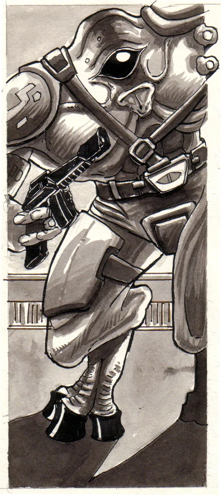
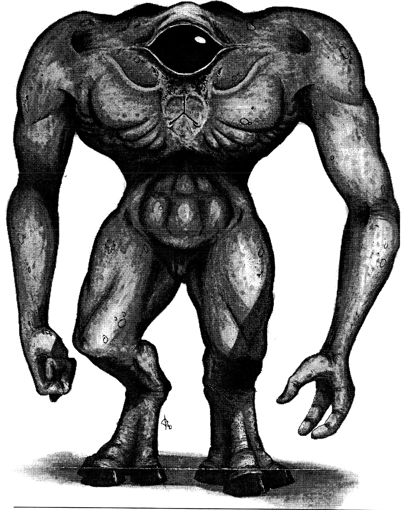
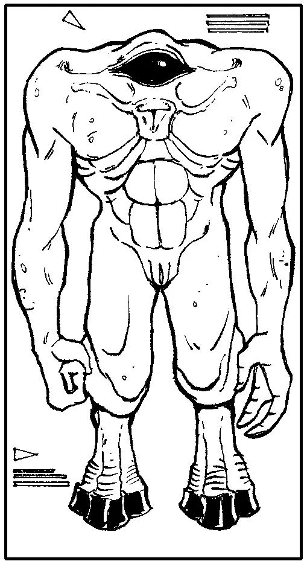

Physiology
The Krane are large individuals up to 4 meters in height and weighing 500 to 900 kilograms. At first appearance they look bulky and intimidating, in fact they are very sturdy. The krane habitat has caused them to evolve in this manner. In most ways they are similar to the large mammals found on Terra,Algor, or Bromua in that they are big and have the muscle to support them. They are bipedal with 2 large arms. most of their bulk is located above their legs and it's in this area where most of their sensory organs are found. They have a large eye about 12 to 25 cm wide, the eye is completely black that can tint everything light by means of a chemical in the fluid of the eye or by squinting. The eyelids have hairs along the rim to prevent dust from entering the eye, but surprisingly these are the only hairs on their body. Just below their eye to either side there are two small holes. These holes are additional breathing holes, but not considered a nose because they have poor sense of smell. Just below them in the center between the large pectorals is their mouth. The mouth has four teeth to grind food, but use their hands to make bite size pieces and also have a good sense of taste. In side the mouth near the back at the base of the windpipe they have their voice box. It has few cords so the voices are deeper and their range in sounds are less. They have an ear hole at the top of the back and are capable of hearing a cricket at 70 meters depending on the size of the cricket. At the top of their head just below the skin and head plate is their organ for balance, this organ is bizarre because it has a central nerve bundle which receives information first then transfers it to the brain and the rest of the body. Stretching out from the balancing nerve bundle are to globes near the shoulders. each globe is filled with a fluid that acts like a level and is very effective. The krane nervous system is quite different from most other races because in some respects it better than some system and worse than others. Their upper body is controlled by their central brain at about 30.5 meters per second thus making the reactions very quick for their large size. Their lower body is controlled by a small reflex brain which information moves a 20.7 meters per second This speed difference poses a problem for the krane because they can throw themselves off balance when quickly reacting to attack. This isn't to say they fall down it just means their weight can over carry them. They have touch receptors on 97% of their body surface which can feel heat, wind,pressure,cold etc., but really these senses are limited due to their leathery skin. The kranes average body temperature is 46 degrees celsius this being warmer than most races means they can tolerate heat very well. Their skin is filled with million of sweat glands which secrete water to cool them down which is very similar to terrains. The skin is a complete black, this makes them absorb large quantities of sunlight and this is the reason for the high tolerance for heat. The Krane have large arms with a ball joint at the shoulder a hinge joint at the elbow and a universal hinge joint at the wrist, then their three digit hand. The hand has two fingers that are triple jointed and an opposable thumb which makes them able to grab things effectively. Their leg are same as their arms except in one respect. The ankle is elevated far above the ground and the first set of bones are longer than the last two. The last two form toes which move to form the base in which they stand on. Due to the large size of the Krane,it has a very large heart. It works by sucking blood from the body then pumping it into another chamber then to the one lung then into yet another chamber which is the strongest of the 3 chambered heart, and back into the body. each blood vessel has a one way valve which prevents blood from acting on the pull of gravity. The blood is carbon iron based making it a bright red when oxygenated and a dark purple when depleted. The blood deepest in the Krane's body is always the dark purple and blood closest to the skin a bright red. The krene carry many antibodies In their blood. They have natural Immunity to viruses that have almost wiped out population, but are easy prey to simple bacterial infection. The blood fluid is made up of several different cells and chemicals.The most common are the oxygen carriers and then the antibodies and then the fuse cell,similar to the platelets. The most prominent chemicals in the blood are mostly hormones and growth stimulants. An oddity about the Krane is they produce pheromones which tell another krane what sex they are and their readiness to mate. The mating of the krane doesn't take long but finding a proper mate does. At a glimpse a bystander could not tell the difference between male or female until the genitals are exposed from the slit in the groin. During mating the krane stop breathing . This reaction is still yet unexplained even by the Krane. The Interesting thing about this phenomenon is they can hold their breath for extended periods of time with no ill effects. Most organs are located in the large mass above the abdomen intestine, stomach, digestive glands, and similar digestive organs. Most digestive organs are located near the mouth except the single intestine which snakes its' way through the torso until it ends at the lower back or anus. The Krane primary food are plants and insects they rarely eat flesh. One thing about the Krane is that you rarely find a skinny Krane, even in old age they are still quite bulky. Each Krane has a life expectancy of 130 to 170 years (S.E.Y.). The Krane over all body structure is quite sturdy and strong but in many respects the same as brittle Terrains. The bone structure itself has a mass of up to 300 kg and is very impervious to breakage but if a bone should receive a break it takes a long time to heal. It is in the large heavy bones where the blood is produced unfortunately this is a slow process. The bone material is made up of calcium and carbon, this mixture make their bones very strong and also somewhat flexible . In any case the Krance are one of the largest races discovered.

The process of heat conduction and absorption is still a valuable source of energy to the Fenbin, especially during the summer. The opposing colours cause heat currents in fluid channels within the thorax and abdomen, and this action drives molecule sized thermal-pumps that make high energy molecules that can be stored or used as needed. The organs of their respiratory system are mainly located in the abdomen and open to the atmosphere through the first groove in the exoskeleton where the legs originate. This slit is surrounded by stiff hairs that are kept moist to clean the inhaled air of fine particles and dust. A long windpipe joins the central sack, in the abdomen, with the horn structure atop the head. This connection was used to provide air to the individual when hunting (they buried themselves and would pounce upon unsuspecting prey) but now it is used for purely ceremonial uses. Their small and delicately structured heart is placed low in the thorax, and indicative of the light gravity of Tabell. Their weak heart, by our standards, still manages efficient oxygenation of their iron based blood. Their digestive system is strictly that of a carnivore specially equipped for an insect diet. Females Fenbin are larger than males, and they choose their mates at the beginning of the great celebration. The sexual organs share a duct with the spinneret, and copulation results in the male passing of a package of sperm wrapped in spun fibres to the female. She can then store the sperm or use it to fertilize her eggs. Fertilization will yield 2-3 dozen eggs all wrapped in cocoon. After three months the young will emerge for the cocoon and begin a process of growth that will last for the first 11 years of life. During this time they remain in the city as they would not survive in the extreme environment away from the city.

Senses
Most of the Kranes sensory organs are located in the mass above the legs. At first glimpse the second thing beside their size you see is the large eye sometimes 30cm in diameter. This organ takes up most of the interior space in the upper torso. The drawback to having single vision is range finding but this is only a problem at long ranges. One good thing about this type of eye is due to the size of the iris it has incredible night vision capabilities. One unfortunate thing about the Krane is that they have low color vision but it is this that contributes to the night vision . The mouth is unique because of the three prehensile lips which are able to whistle beautiful melodies. Inside the mouth is a smaller mouth with two flat incisor like teeth and two molars. Just 2 cm behind the molars are the taste buds. The Krane have a good sense of taste except they can't taste sour things. Their sense of smell isn't that effective but they can smell sugar. The odd thing about the Krane is they can smell but they can't distinguish between odors and their two nose holes operate independently of each other. In a situation a Krane could locate his opponent by knowing which nose hole is receiving a stronger odor. On the top of the Krane is a single ear with directional muscles. It works by sound waves moving small hard membranes and bones to reproduce the sounds, and this method is very effective. This This ear can hear sound very low on the scale, but has difficulty on higher wave frequency like the wine of a turbo fan. All over the Krane body are touch receptors which feel hot, cold, pressure, but in varied degrees due to the thick jet black leathery skin. The black color of the skin attracts heat and this adaptation can tell them the location of a hot heat source. Neurologically the Krane have no psychic power or ability to receive psychic stimulus, but this drawback has a good side; even the powerful soo coli cannot read a Krane's thoughts for some unexplained reason.

Speech
The Krane have only toe dialects at this time the Mondue and Trinoma. In the past they have had several dialects but over centuries they have brought the number down to two. They both sound the same but end end with different suffixes or begin with different prefixes or veg different roots but to a bystander listening in to a conversation between a mon and a tron wouldn't be able to tell them apart. The voice box of a Krane has less cords than a Terrain or a Mahendoshi so their voices are deep and strong. This trait limits the amount of languages the krane can speak. They can't even speak the Aracnian or the Mahendoshi. A Krane holding a steady conversation with an Eebek in not possible unless there is a translator present. The Krane has a considerable difficulty talking to other races , because when they talk the use almost no body language.
Social / Culture
The Krane lifestyle is that of a Hyperactive child as in a Krane only needs 3 hours of sleep on average and seem to always be fidgety and active in the daily life. Rarely do you see a Krane sitting for hours on end. A krane family or brude consists of a male and a single offspring. The female bares young life after carrying the baby for 15.5 months. The baby can survive right after birth. The father brings up the young and the mother disappears after birth. A child Krane take 11 years (S.E.Y.) to grow into an adult and 15 years before it can reproduce. Mating rituals are varied , The most common form, is males and females in large groups in sods, similar to bars. Both male and female have a strong desire to reproduce. As religion goes the Krane don't believe in a god or gods and have no real loyalties to family or friends. They have no sense of love or loss when an offspring dies but they are extremely possessive as a large group as a large group with material things. As an Individual they are free enterprising. A Krane community contains about 300 to 1000 individuals and many stores, sods, similar recreational facilities , med centers, government centers and a large number of brides. Several communities make up a klesh. several classes make up a city and several cities make up a country or cosh. On Krane now there are two coshes. The Mondue and the tronmoa. Both he mondue and the tron are very military equipped and are war orientated. At the borders. Both the Tromoa and the mondue want what the other has and this has caused more and bloodier wars. But due to their possessive nature they have a knack for inventing effective weapons. This isn't' to say the Krane war , they don't, but due to their possessive nature they passionately and painfully defend their borders and territories. Each cosh has a huge army on average 1,750,000 Krane in each army and their weapons technology has been developed to gargantuan proportions. Their ground forces are massive, but their space navy is young and growing. As a whole either the Modue or the Tromoa to an outside observer are deadly enemies. And It is the reason why the Krane are still under consideration by the P.S.F. The largest war ever fought on Krane was the Droode which ended 23 years (S.E.Y.) before it first discovery by and Eebek exploration vessel. This war took the lives of six million krane and lasted 11 years (S.E.Y.). When wars start on Krane they are fast passed and costly . AN interesting thing about the Krane military technology is they have nuclear power but would never use it against their enemy because the whole idea about a Krane war is to gain possession of what the other Cosh has. The loser wouldn't use nuclear power to get it back because they would want it to be in relatively the same shape as they left it. Both coshes have been around for 261 years (S.E.Y.) , before the Tronmoa and Mondue there were up to 30 coshes and multiple leaders. The reason for the extended period of peace originally is the Droode war wasn't going anywhere but now due to the discovery of other races they are as a whole a bit paranoid. The Krane relation to the P.S.F. is bias toward joining but they would like to solve their problems first. Many Individual Krane are part of the P.S.F. and venture back and forth. The economic condition of Krane is average with 11% unemployment. The largest cities on Krane are the Gouwin at a population of 11.2 million and Earn with a population of 12.6 million both are in the Momdue Cosh. The planets' entire population is 7 billion with 3.7 billion in the Mondue Cosh and 3.3 Billion in the Tronmoa . Krane was discovered by the Eebek in 2239 but were practically ignored by the inhabitants due to the fact that the Krane can't communicate with the Eebek. The most productive meeting between the Krane as a whole have no qualms against any individual races.
NOTES: The Krane blood has chemicals in that are sought by the medical society due to its' ability to congeal fast and kill certain viruses. A drawback to the Krane size is they can use krane manufactured goods or Krane adapted shelters or vehicles. The Krance only need to eat every 48 hours (S.E.H.) and drink ever 12 hours. Binocular vision is impossible for the Krane, but their compensates for depth. The Krane live up to 120 years (S.E.Y.).
Special Abilities
Sex
Life Span
Planet: Krane System: Babylon Gravity: 1.2 Height: 3m to 4 M Weight 500 Kg to 900 Lifespan 120 to 180 Years (s.e.y.)
First Sphere - Racial Size Comparison Chart
 ---
---